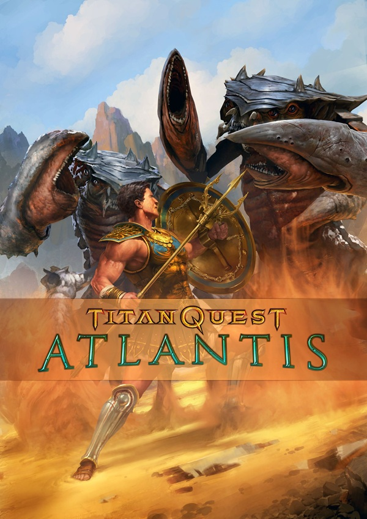

Titan Quest: Atlantis
-
Client
X Pro Inc.
-
Date
10-04-2019
-
Project link
PROJECT DESCRIPTION
- Role: 3D Generalist | Contractor
- Core Stack: Maya, Redshift
- Main Focus: Set Asset Prep, Shading, Lookdev, Set Dressing from Concept, Render Layer Management
A 30-second cinematic announcement trailer for a video game expansion.
Utilizing a native Maya and Redshift pipeline, my responsibilities focused on translating environment concept art into fully realized 3D sets.
I handled the front-end asset preparation, complete lookdevelopment and shading, environment layout, set dressing,
and the technical structuring of all final render layers for post-production.
MY TASKS
- Set Asset Preparation: I ingested and prepared various environment assets within Maya, ensuring clean topology and production-ready UVs suitable for detailed lookdev and rendering.
- Shading, Lookdevelopment: I created and optimized complex material networks inside Redshift, establishing the final visual style, surface textures, and material responses for the expansion's new environments.
- Set Dressing: I assembled the 3D environments according to detailed concept art, populating the sets to achieve the required depth, composition, and atmosphere for the cinematic.
- Render Layer Management: I structured the final render layers and created comprehensive technical utility passes to ensure a smooth, flexible workflow for the compositing team.